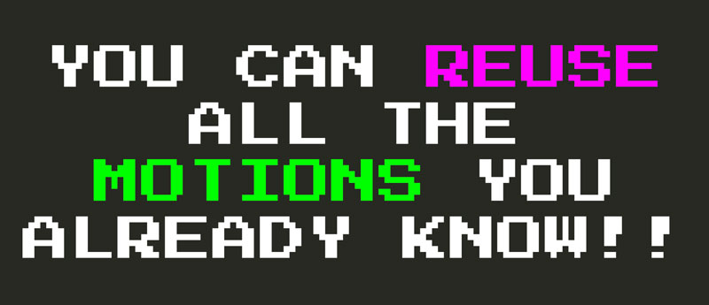

El lenguaje secreto de vim
Como habrás notado, todos los operadores, conteos y movimientos de Vim que has aprendido forman una especie de lenguaje (de programación). Puedes pensar en los operadores como funciones, y cuentas y movimientos como argumentos, o usando una analogía aún más simple... Puedes pensar en operadores como verbos, cuentas como adjetivos y movimientos como objetos.
La verdadera magia de Vim es la composición. A medida que vayas construyendo este vocabulario de operadores y movimientos, encontrarás que puedes combinarlos según marque tu corazón. Tal como lo harías con las palabras de un idioma hablado.
De manera que, una vez que sabes todo sobre el cl, caw, ciw, ct. del mundo, y que vayas a aprender cómo funciona dl, no sólo serás capaz de utilizar dl. No. Sabrás inmediatamente que también se puede combinar el operador d con todo el vocabulario de movimientos que ya tienes a tu disposición y daw, diw, dt. hasta el final de los tiempos.

Esto es muy refrescante.
Cuando uses Vim, sentirás que estás navegando por un metauniverso de edición de texto, es como programar o controlar el mismo mecanismo de edición y escritura de texto. Si estás familiarizado con git y cómo se siente usar la línea de comandos git para trabajar con el control del código fuente, puedes pensar en Vim como el git de la edición de texto. (Dejando de lado el hecho de que Vim es anterior a git en casi 30 años).
**Con Vim, te verás en un trozo de texto y ya no verá más que palabras o texto, verás las posibilidades de un número infinito de operadores y movimientos que se pueden aplicar a la vez.